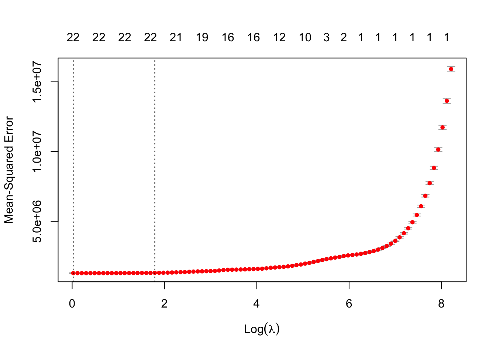
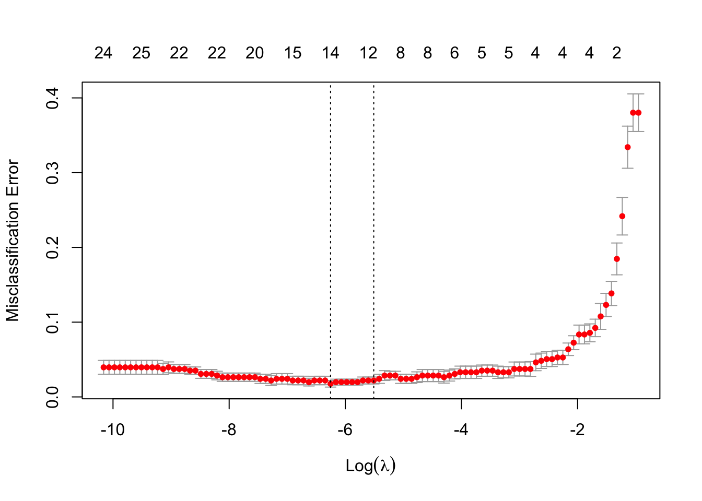

We implement and practice LASSO and logistic regression classifier with diamonds dataset and breast-cancer dataset.
Task 1: About Penalized Regression (LASSO)
We use the diamonds dataset that contains data for 53,940 diamonds. Each diamond includes 10 variables such as price, cut, color, and others. Train a regression model with a LASSO penalty to predict the price from different feature variables.
The first column is useless, we should remove it.
dat =read.table(file ='diamonds.csv', sep =",", header = T)head(dat)
X carat cut color clarity depth table price x y z
1 1 0.23 Ideal E SI2 61.5 55 326 3.95 3.98 2.43
2 2 0.21 Premium E SI1 59.8 61 326 3.89 3.84 2.31
3 3 0.23 Good E VS1 56.9 65 327 4.05 4.07 2.31
4 4 0.29 Premium I VS2 62.4 58 334 4.20 4.23 2.63
5 5 0.31 Good J SI2 63.3 58 335 4.34 4.35 2.75
6 6 0.24 Very Good J VVS2 62.8 57 336 3.94 3.96 2.48
dat = dat[,-1]
Set random seed as 2023, then randomly split dataset training and testing set (80/20).
Apply cv.glmnet function to tune the hyper-parameter through a 10-fold cross-validation. This is a good example showing how to include categorical feature variables when one implements LASSO regression by the glmnet package. Tips: We can use the function model.matrix. (We used this function in the previous lab)
# A good example of handling categorical feature variablesdat_tr_x =model.matrix(price~.-1, dat_tr)
The argument x in cv.glmnet function must be a matrix.
class(dat_tr_x)
[1] "matrix" "array"
library(glmnet)
Loading required package: Matrix
Loaded glmnet 4.1-8
m =cv.glmnet(x = dat_tr_x, y = dat_tr$price, family ="gaussian", alpha =1, # if alpha = 1, we use lasso penalty, 0 for ridge regression, number between 0 and 1 for elstic netnfolds =10)plot(m)

Calculate the square root of MSE of the model with the testing set.
dat_te_x =model.matrix(price~.-1, dat_te)pre_y =predict(m, newx = dat_te_x, s ="lambda.min") # again, 'newx' is prepared with function 'model.matrix'sqrt((mean((pre_y - dat_te$price)^2))) # model performance, square root MSE.
[1] 1131.613
Task 2: About Logistic Regression
We use breast-cancer dataset to practice the Logistic regression and do some experiments. Train a logistic regression model with the training set to predict the diagnosis results from feature variables radius, texture, and smoothness. Evaluate the accuracy of the resulting model on the testing set.
# Import datarm(list =ls()) # clean the workspace, remove all the objects in the r environment dat_tr =read.table("BreastCancerTrain.txt", header = T, sep =",")dat_te =read.table("BreastCancerTest.txt", header = T, sep =",")
Apply glm function to train the logistic regression model described above. Note: The variable Diagnosis is of character type, however, glm function only accepts a numerical or factor type target variable.
# here, we need to change the data type of variable 'Diagnosis'.# One option is changing it to numeric typedat_tr[,1] =ifelse(dat_tr$Diagnosis =="M", 1, 0)dat_te[,1] =ifelse(dat_te$Diagnosis =="M", 1, 0)
Alternative option, change the type of target variables as factor
m =glm(Diagnosis~radius+texture+smoothness, dat_tr, family =binomial())
Evaluate the resulting model with the testing set. The function predict can be applied to predict the label of new observations with the resulting model. Different from a regression model, however, you need to specify another argument type to correctly get the prediction. You can choose response, then the predict function will return the posterior probability. Calculate the accuracy and kappa statistic.
library(caret)y_pre =predict(m, newdata = dat_te[,-1], type ="response") # here you need to set argument 'type' as 'response', then the posterior probability will be returned. y_pre =as.numeric(y_pre>0.5) # choose 0.5 as a cutoffmean(y_pre == dat_te$Diagnosis)
Confusion Matrix and Statistics
Reference
Prediction 0 1
0 70 5
1 5 34
Accuracy : 0.9123
95% CI : (0.8446, 0.9571)
No Information Rate : 0.6579
P-Value [Acc > NIR] : 2.23e-10
Kappa : 0.8051
Mcnemar's Test P-Value : 1
Sensitivity : 0.8718
Specificity : 0.9333
Pos Pred Value : 0.8718
Neg Pred Value : 0.9333
Prevalence : 0.3421
Detection Rate : 0.2982
Detection Prevalence : 0.3421
Balanced Accuracy : 0.9026
'Positive' Class : 1
Manually calculate the posterior probability for an observation in the training set.
To manually calculate the posterior probability, we need to define two functions, one for calculating the score values and one for calculate the probability.
score_function =function(x, coeff){ x =c(1,x) score =sum(x*coeff) # w_0 + w_1x_1 + w_2x_2 + ... + w_px_preturn(score)}logit_function =function(s){1/(1+exp(-s))} # define logit function for calculating posterior probability
Here, we show the results for the 105th observation in the dataset.
id =105# First, calculate the posterior probability by function `predict`prob =predict(m, newdata = dat_te[id, ], type ="response")prob
105
0.9997994
# Second, manually calculate the posteriro probabilityx =as.matrix(dat_te[id, c(2,3,6)]) # `dat_te` is a data frame, we need to transform it to an array score =score_function(x, m$coefficients)prob =logit_function(score)prob
[1] 0.9997994
Write down the decision boundary of the resulting model. Check the model coefficients first
The decision boundary is \[
1.41\times radius + 0.42 \times texture + 147.4 \times smoothness = 43.252
\] i.e. if the score value is above \(43.252\), then we predict it as positive case (malignant).
Task 3: About Penalized Logistic Regression
We use breast-cancer dataset to practice penalized logistic regression. Using all the 30 feature variables to train a penalized logistic regression model to predict the diagnosis results.
# Import datarm(list =ls()) # clean the workspace, remove all the objects in the r environment dat_tr =read.table("BreastCancerTrain.txt", header = T, sep =",")dat_te =read.table("BreastCancerTest.txt", header = T, sep =",")
Apply cv.glmnet function with the training dataset. We do 10-fold cross-validation.
m =cv.glmnet(x =as.matrix(dat_tr[,-1]), y = dat_tr$Diagnosis, data = dat_tr, family ="binomial",alpha =1,type.measure ='class', # if you set it as 'class', then the cross validation is based on accuracy, otherwise an other statistic will be used.nfolds =10)plot(m)

Print the coefficients of the final models with minimum and 1se misclassification errors